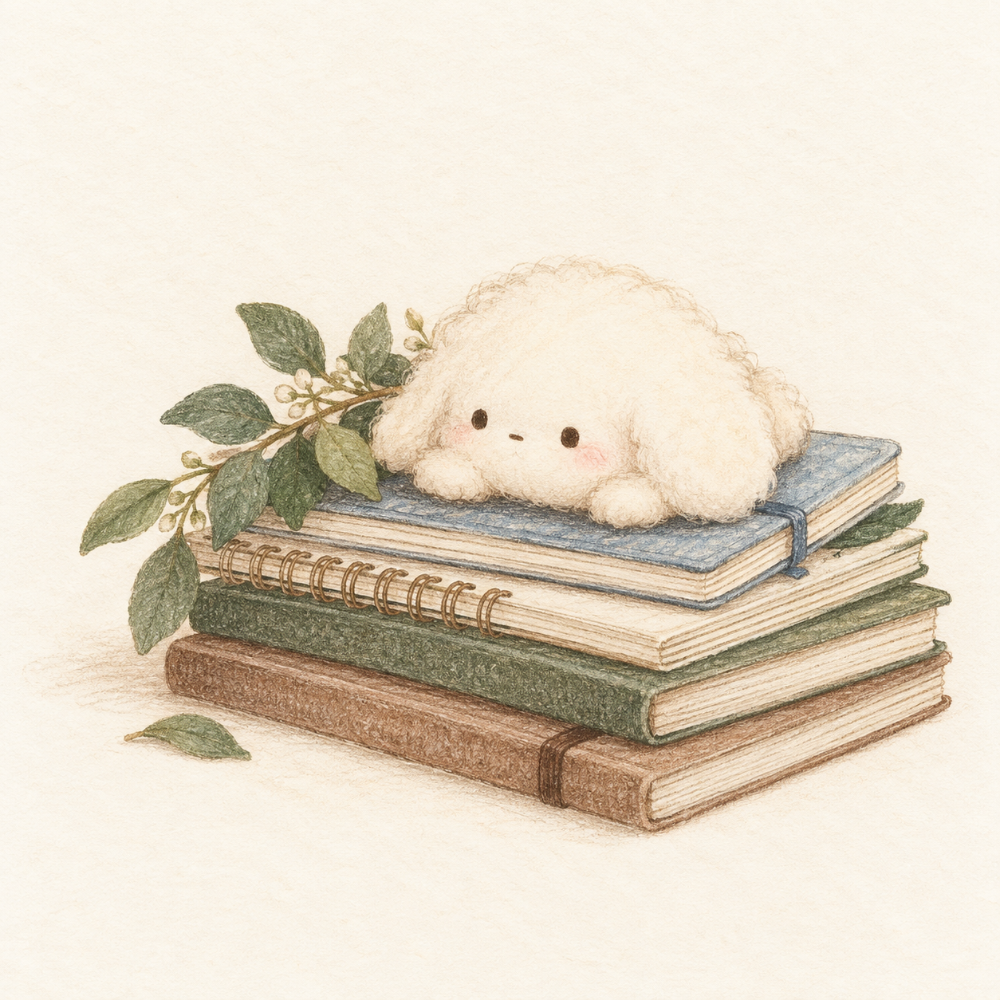

HELLO, I'M SHIH-YU
陳詩妤的
陳詩妤的
學習與作品
把每一段學習經驗，
慢慢整理成看得見的作品。
這裡收集我的學習歷程、海外實習與數位學習作品。從外語溝通到醫護教育，我持續練習讓知識更容易被理解與使用。

慢慢累積，持續學習
把每一段學習經驗，
慢慢整理成看得見的作品。
這裡收集我的學習歷程、海外實習與數位學習作品。從外語溝通到醫護教育，我持續練習讓知識更容易被理解與使用。
